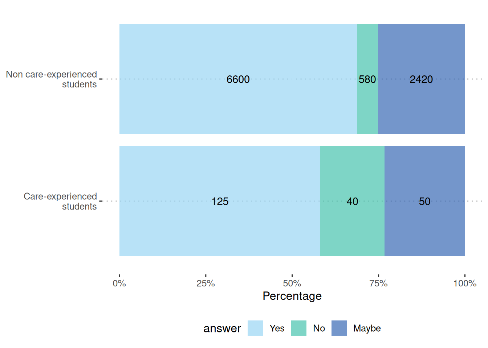

Abstract
Young people in foster or residential care (care-experienced children and young people (CYP)) face different lived experiences than those from non-care homes. This could influence their decision-making around aspirations after leaving school, such as their career, education, or training. This brief analysis seeks to ascertain whether a student’s care status has a relationship with their aspirations after school.
In the data collected for the latest YPHWS cohort, there were 255 students out of a total of 11151 students who are care-experienced CYPs, representing 2.3% of the total student population.
Here, we identify that the students being looked after status has a very statistically significant relationship with continuing education, but with no statistical significance with any of the other pathways after school.
Methods
One of the questions coded in the YPHWS survey is what do you plan to do as a next step after leaving school? This is a multi-factorial answer, where students can respond either yes, no, or maybe to several options:
Education
Job
Training
Family
Uncertain
Other
We performed a chi-squared test for each of the different prospects questions on the tables below for each of the responses, along with their relative proportions. The chi-squared test tests statistical significance of the association between students’ care-experienced status and their responses to different pathways after school.
Note, these numbers have been suppressed to the nearest 5 to prevent disclosure, but the actual chi-squared tests have been performed on the raw numbers.
More on chi-squared tests
We can put the results of students answering the question in YPHWS in a contingency table, which tallies the responses into a table like:
| Care-experienced | Maybe | No | Yes |
|---|---|---|---|
| Yes | |||
| Maybe | |||
| No |
With contingency tables, we can perform chi-square tests, which examines whether the categories of the rows and columns of a contingency table are statistically significantly associated.
The chi-squared test compares the observed frequencies from the data with expected frequencies if there were null or no relationship between the variables.
With chi-squared tests, we need sufficient size in each of the cells inside the table. While the number of students not care-experienced outnumber the number of students who answered prefer not to say or yes, there are still sufficient numbers to perform the test (>5) in each of the responses.
After the critical chi-squared test value is calculated, we then use the degrees of freedom to match the results on a distribution table with a significance threshold to determine statistical significance, usually set at 0.05. More about chi-squared tests can be found at: BMJ - The Chi squared tests
Students answering prefer not to say were omitted from the test.
Results
| education | job | training | family | unsure | other |
|---|---|---|---|---|---|
| ✅ | ❌ | ❌ | ❌ | ❌ | ❌ |
Education
| care-experienced | Maybe | No | Yes |
|---|---|---|---|
| No | 2420 | 580 | 6600 |
| Yes | 50 | 40 | 125 |
| care-experienced | Maybe | No | Yes |
|---|---|---|---|
| No | 25% | 6% | 69% |
| Yes | 23% | 19% | 58% |
| Significance | p-value |
|---|---|
| very statistically significant | 0 |
Job/career
| care-experienced | Maybe | No | Yes |
|---|---|---|---|
| No | 2775 | 770 | 5800 |
| Yes | 70 | 25 | 120 |
| care-experienced | Maybe | No | Yes |
|---|---|---|---|
| No | 30% | 8% | 62% |
| Yes | 33% | 12% | 56% |
| Significance | p-value |
|---|---|
| not statistically significant | 0.1 |
Training
| care-experienced | Maybe | No | Yes |
|---|---|---|---|
| No | 3925 | 2095 | 3015 |
| Yes | 85 | 60 | 65 |
| care-experienced | Maybe | No | Yes |
|---|---|---|---|
| No | 43% | 23% | 33% |
| Yes | 40% | 29% | 31% |
| Significance | p-value |
|---|---|
| not statistically significant | 0.3 |
Family
| care-experienced | Maybe | No | Yes |
|---|---|---|---|
| No | 3095 | 3675 | 1675 |
| Yes | 65 | 90 | 45 |
| care-experienced | Maybe | No | Yes |
|---|---|---|---|
| No | 37% | 44% | 20% |
| Yes | 32% | 45% | 22% |
| Significance | p-value |
|---|---|
| not statistically significant | 0.4 |
Uncertain
| care-experienced | Maybe | No | Yes |
|---|---|---|---|
| No | 2380 | 3630 | 2645 |
| Yes | 50 | 95 | 55 |
| care-experienced | Maybe | No | Yes |
|---|---|---|---|
| No | 27% | 42% | 31% |
| Yes | 25% | 48% | 28% |
| Significance | p-value |
|---|---|
| not statistically significant | 0.4 |
Other
| care-experienced | Maybe | No | Yes |
|---|---|---|---|
| No | 3095 | 3675 | 1675 |
| Yes | 65 | 90 | 45 |
| care-experienced | Maybe | No | Yes |
|---|---|---|---|
| No | 37% | 44% | 20% |
| Yes | 32% | 45% | 22% |
| Significance | p-value |
|---|---|
| not statistically significant | 0.4 |
Conclusions/implications
Here, we identify that the students being looked after status has a very statistically significant effect with continuing education, and no significance with any other pathway after leaving school.
Despite only having one pathway with statistical significance, this is noteworthy in that it can provide carers, teachers, and others involved in the health and wellbeing of care-experienced CYPs an avenue in monitoring potential shortcomings of a care-experienced CYP’s potential. Further educational pursuits after school are highly associated with better health outcomes, lower deprivation, and higher earnings potential in adulthood. Reducing these inequities to access to higher education or other further educational pursuits is a key element to public health policy.
More on the results
Below shows the chi-square tests applied to the contingency tables collated together:
| question | x^2 | p.value |
|---|---|---|
| education | 51.56 | 0.00 |
| job | 4.46 | 0.11 |
| training | 2.62 | 0.27 |
| family | 2.01 | 0.37 |
| unsure | 1.69 | 0.43 |
| other | 2.01 | 0.37 |
A p.value of less than 0.05 indicates statistical significance, and that there is a relationship between the student’s status of being looked after and the specific prospect response.
A chi-squared test is a simple nonparametric test which only tells us of an association if statistical significance is found. Further analyses can be performed to elucidate further details on how or why the relationship between a children being looked after affects their prospective choices after education, but these are beyond the scope of this report.